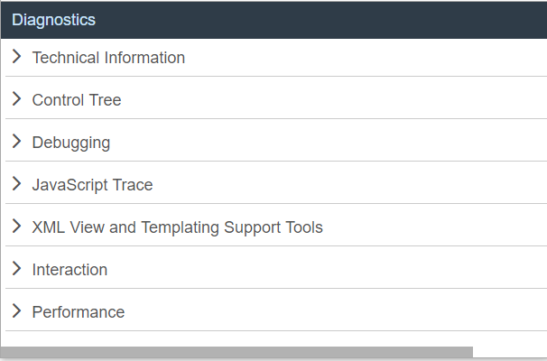

Download the example app with errors from the Demo Kit at Troubleshooting and run the app.
Open the Diagnostics window by pressing Ctrl Shift Alt S .
Let's say that you are facing a performance issue in your app, so let's check some performance-relevant settings in the Diagnostics window:
Expand the Technical Information section and scroll down to view the loaded libraries.
If you spot any libraries that you originally defined, but you don't
actually use, remove them from the manifest.json file
in your development environment to prevent them from loading. In this
case, you can see that the example app loads the
sap.ui.layout library, even though the
layout control is not used.
The app contains a Do Something button and you want to make the button bigger. The control tree allows you to test which width is the best.
Expand the Control Tree section. Make sure that you display both the app and the Diagnostics windows side-by-side or on different monitors. Otherwise the diagnostics window will go to the background.
Press and hold the Ctrl Shift Alt keys and click the Do Something button in the app. You see the button blinking green.
In the control tree of the Diagnostics window, the button is selected and you can see its properties on the right.
Change the value of the width property to
100% and confirm with Enter.
The button width is automatically increased.
The changes that you make in the Diagnostics window are only temporary. To make your change permanent, you have to change the app code.
If you find a bug in your application, you can easily check whether it has already been fixed in a newer framework version:
Expand the Technical Information section and check the loaded version.
Expand the Debugging section.
Choose Other from the Boot application with different UI5 version on next reload dropdown list.
Enter a custom URL, for example https://sdk.openui5.org/nightly/resources/sap-ui-core.js.
Choose Activate Reboot URL, confirm the dialog box, and reload the app.
Reopen the Diagnostics window and expand the Technical Information section. The loaded OpenUI5 version is now changed.
More features are waiting for you to discover in the Diagnostics window. For more information, see Diagnostics.